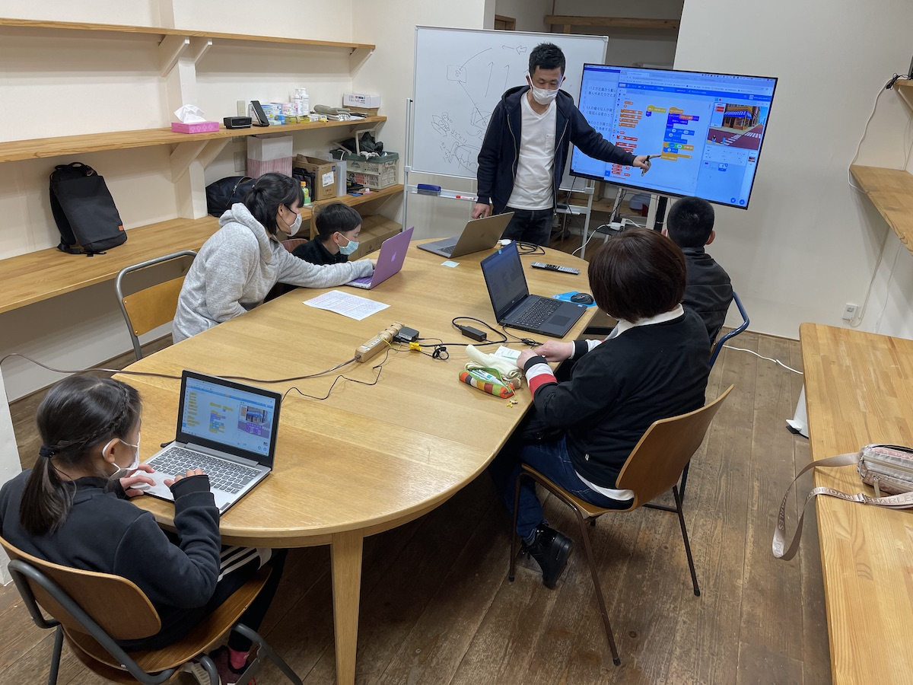
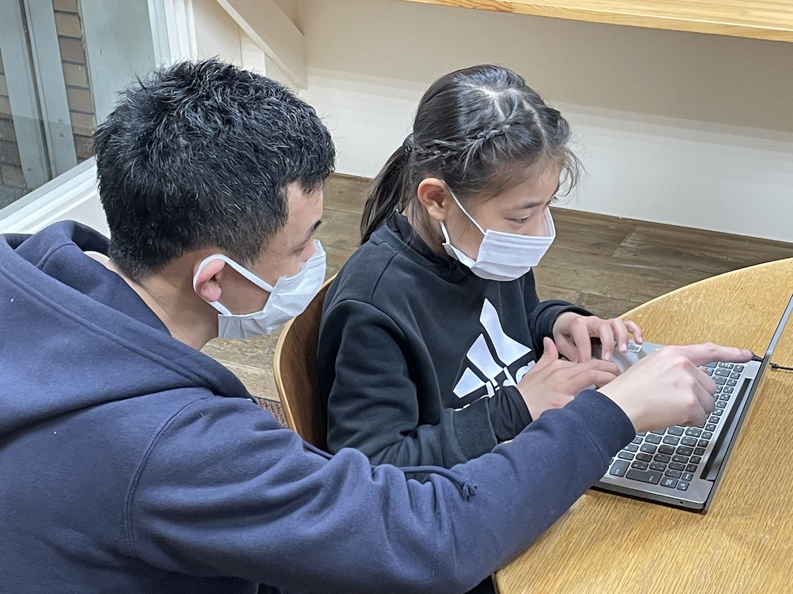

山口市の商店街にIT塾スオウパーティの山口教室を開校しました。防府市に続き2校目となります。
山口教室は生徒4名でのスタートとなりました（この日は1名欠席）。親御さんも同席することが可能です。 防府教室と同様に1つの大きなテーブルを囲むスタイルになっています。
少人数個別指導は変わりません。同じ題材で基礎を学びつつ、応用や拡張は生徒それぞれの独創性に委ね、個別に指導を行ってまいります。
随時、無料体験を承っております。兄弟や友達をお誘い合わせの上、まずは無料体験をお試しください。 詳細はスオウパーティのWebサイトで確認ください。
スオウパーティWebサイト